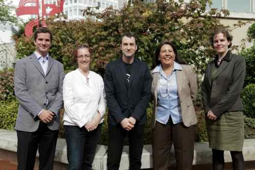

New ODI partnership seeks to bring benefits of open data to developing countries
The Open Data Institute has joined forces with the World Bank and the Open Knowledge Foundation in a three-year project designed to help policy makers and citizens in developing countries understand and exploit the benefits of open data.
The project, launched today at the Open Knowledge Conference in Geneva, has three objectives: supporting developing countries to plan, execute and run open data initiatives; increasing the use of open data in developing countries; and growing the evidence-base on the impact of open data for development.
Gavin Starks, CEO of the ODI said: “Open data drives economic growth and spurs innovation, unlocking previously unforeseen benefits for everyday citizens and for society as a whole. This project will enable more countries and citizens to discover solutions to their most pressing challenges. Our partnership with the World Bank and the Open Knowledge Foundation opens up almost limitless possibilities: to share, collaborate and generate value from open data at a global scale. Plus, it aligns entirely with the ODI’s aim to expand into new countries and sectors.”
The project will include scoping the state of open data; assessing the readiness of countries to open up – and use – their data; training government officials, other policy makers, and civil society; undertaking research and producing guidelines on the best use of open data; and producing case studies of impact. At this stage all developing countries have an equal chance of participating.

Pictured at the Open Knowledge Conference after agreeing the partnership are: Edward Anderson, World Bank; Jeni Tennison, the ODI; Rufus Pollock, the Open Knowledge Foundation; Amparo Ballivan, World Bank; and Laura James, the Open Knowledge Foundation
With an initial budget of $1.25m in year one, the three founding organisations are looking for other partners to join them on the project. Interested parties should contact the ODI or Open Knowledge Foundation to find out more.
Amparo Ballivian, Lead Economist at the World Bank said: “Open data has already brought extraordinary benefits to people in rich countries, helping them to understand and improve the world around them. This project will take the benefits of open data to the developing world. It will explore and extend the frontiers of open data and harness its benefits for poverty reduction.” See Amparo Ballivian announcing the partnership at the Open Knowledge Conference in Geneva by clicking here.
Laura James, CEO of the Open Knowledge Foundation: “Making government, scientific and other data accessible and usable drives positive change across the spectrum: from health to transport, education to entrepreneurship, culture to community. This project will give citizens in developing countries the knowledge they need to campaign for change, and empower them to their hold their governments to account.”